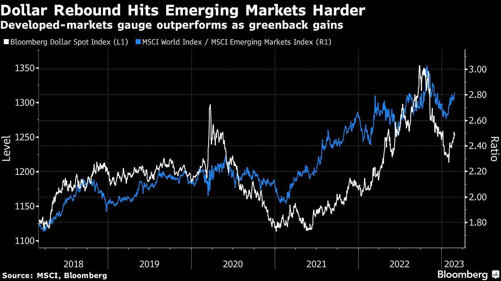

3月1日早间新闻
根据彭博社及路透社新闻编辑整合
头条新闻：
中国将于周三公布2月官方和财新制造业PMI。路透综合29家分析机构的预估中值显示，中国2月官方制造业采购经理人指数(PMI)料续升至50.5，连续两个月位于荣枯线上方。
路透的一项调查发现，在尼日利亚供应进一步恢复的带动下，石油输出国组织(OPEC)2月石油产量有所增加，尽管最大几个产油国严格遵守OPEC+联盟旨在支持市场的减产协议。但产量仍较去年9月下降逾70万桶/日。另外，美国能源信息署(EIA)的数据显示，美国12月原油产量降至1,210万桶/日，为2022年8月以来的最低水平。
美国2月份的消费者信心指数下降。从1月的106.0下降到102.9，下降主要集中在中低收入家庭。

随着通胀的坚挺，6月加息25个基点的概率大增。美元spot rate 也一路反弹上扬。美国6个月国债的回报率达到了5.13%。当无风险回报率达到这个水平的时候，短期内股市回撤就是必然。